S20 — Why is space black if there are billions of stars?
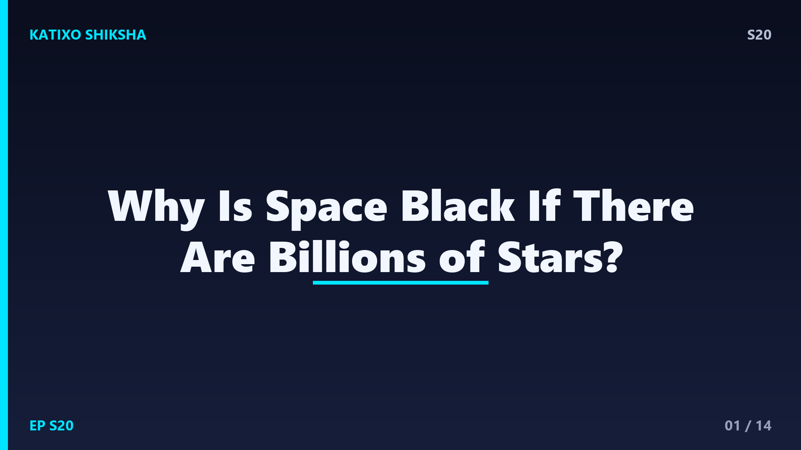
Slide 1दोस्तों, रात के आसमान में देखो, अरबों तारे चमक रहे हैं। हमारी galaxy में ही करीब 100 अरब से ज़्यादा तारे हैं, और ऐसी अरबों galaxies हैं! तो एक सीधा सवाल, अगर इतने सारे तारे हर तरफ चमक रहे हैं, तो space काला क्यों दिखता है? तर्क तो कहता है कि पूरा आसमान रोशनी से जगमगाना चाहिए! आज Katixo KhojLab पर हम इस गहरे और खूबसूरत रहस्य को खोलेंगे, जिसने बड़े बड़े वैज्ञानिकों को सोच में डाल दिया था। चलो शुरू करते हैं!
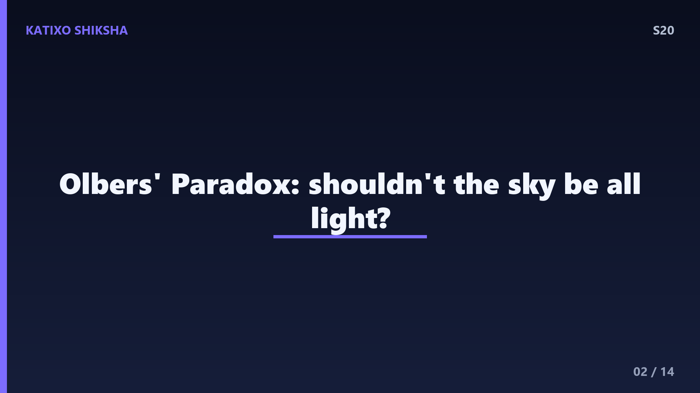
Slide 2ये सवाल इतना important है कि इसका एक नाम भी है, दोस्तों, Olbers Paradox। Paradox यानी एक ऐसी पहेली जो उल्टी लगती है। सोचो, अगर ब्रह्मांड अनंत है और तारों से भरा है, तो तुम आसमान में कहीं भी देखो, तुम्हारी नज़र किसी न किसी तारे पर जाकर टिकनी चाहिए। ठीक जैसे घने जंगल में चारों तरफ देखो तो हर दिशा में कोई न कोई पेड़ दिख ही जाएगा। तो फिर पूरा आसमान तारों की रोशनी से सफेद चमकता क्यों नहीं? यही असली पहेली है।
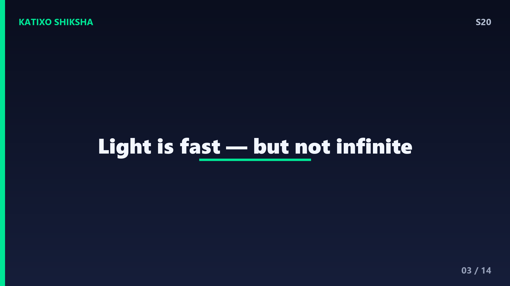
Slide 3अब पहला बड़ा जवाब, दोस्तों, और ये है रोशनी की रफ्तार और समय। रोशनी बहुत तेज़ है, करीब 3 लाख किलोमीटर हर second, पर infinite नहीं। तारे इतने दूर हैं कि उनकी रोशनी को हम तक पहुँचने में सालों, हज़ारों, यहाँ तक कि अरबों साल लगते हैं। अब सबसे बड़ी बात, हमारा ब्रह्मांड हमेशा से नहीं है, इसकी एक उम्र है, करीब 13 अरब 80 करोड़ साल। तो जो तारे बहुत बहुत दूर हैं, उनकी रोशनी अभी तक हम तक पहुँची ही नहीं!
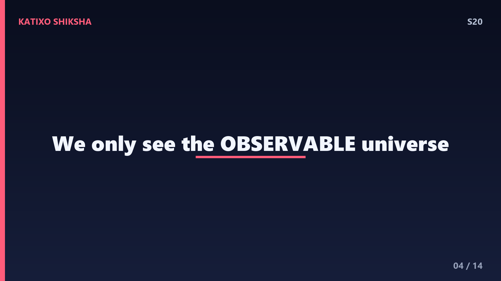
Slide 4इसे ऐसे समझो, दोस्तों। मान लो किसी दूर के तारे की रोशनी को हम तक आने में 20 अरब साल लगते। पर ब्रह्मांड की उम्र ही सिर्फ 13 अरब 80 करोड़ साल है। मतलब उस तारे की रोशनी ने अभी तक इतना सफर पूरा ही नहीं किया, वो अभी रास्ते में है! इसलिए हम सिर्फ उतनी ही दूर तक देख सकते हैं जितनी दूर से रोशनी को हम तक पहुँचने का समय मिला है। इस सीमा को observable universe कहते हैं, इसके आगे का हमें दिखता ही नहीं।
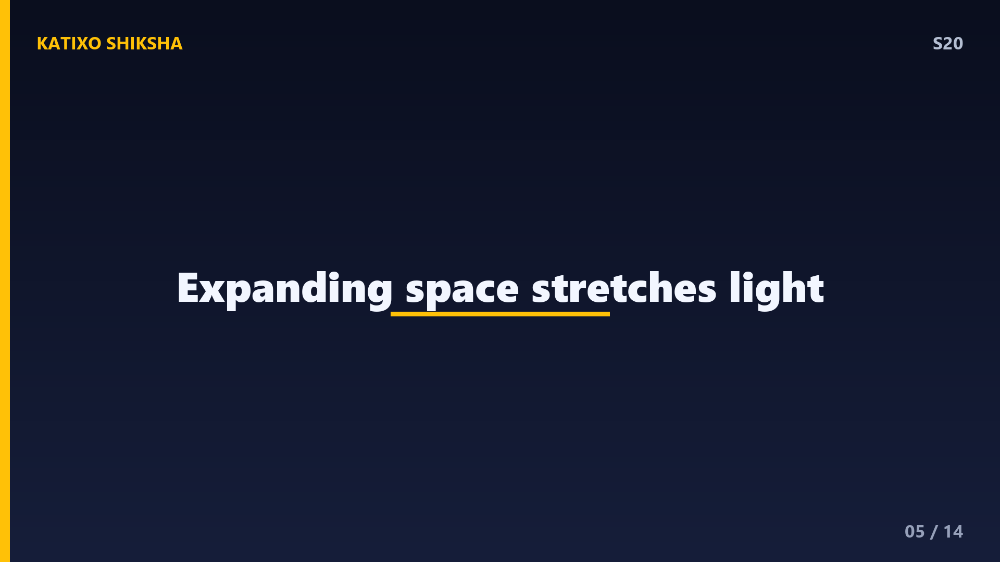
Slide 5अब दूसरा कमाल का कारण, दोस्तों, ब्रह्मांड का फैलना। हमारा ब्रह्मांड लगातार फैल रहा है, यानी galaxies एक दूसरे से दूर भागती जा रही हैं, और ये Edwin Hubble ने सिद्ध किया था। जब रोशनी फैलते हुए space में सफर करती है, तो उसकी wavelength खिंच जाती है, यानी लंबी हो जाती है। इससे visible light धीरे धीरे infrared और फिर radio waves में बदल जाती है, जो हमारी आँखें देख ही नहीं सकतीं। इसे redshift कहते हैं, क्योंकि रोशनी लाल छोर की तरफ खिसक जाती है।
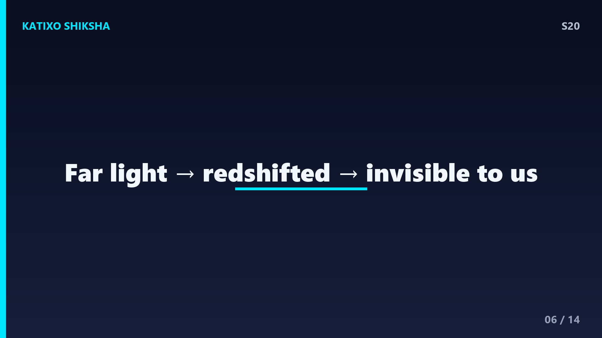
Slide 6तो जोड़ो दोनों बातें, दोस्तों। बहुत दूर की galaxies की रोशनी redshift की वजह से इतनी खिंच जाती है कि वो हमारी आँखों के लिए invisible हो जाती है। यानी रोशनी आ तो रही है, पर ऐसे रूप में जो हमें काला अंधेरा लगता है। हमारी आँखें सिर्फ एक छोटी सी range देख पाती हैं जिसे visible light कहते हैं। तो दूर की रोशनी हमारे लिए मौजूद होकर भी अदृश्य है। space सिर्फ इसलिए काला नहीं कि रोशनी नहीं, बल्कि इसलिए कि हम उस रोशनी को देख नहीं पाते।
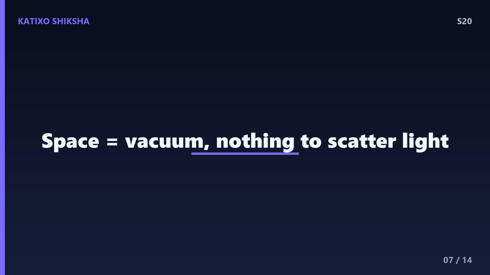
Slide 7एक और ज़रूरी बात, दोस्तों, space में कुछ नहीं होता रोशनी फैलाने के लिए। धरती पर दिन में आसमान नीला और रोशन इसलिए दिखता है क्योंकि हवा के molecules सूरज की रोशनी को बिखेर देते हैं, इसे scattering कहते हैं। पर space में तो लगभग vacuum है, यानी हवा या कोई particles ना के बराबर। इसलिए वहाँ रोशनी को बिखेरने वाला कुछ नहीं होता। तारे की रोशनी सीधी रेखा में चलती है, और जब तक वो सीधे तुम्हारी आँख में न आए, वो हिस्सा काला ही दिखता है।
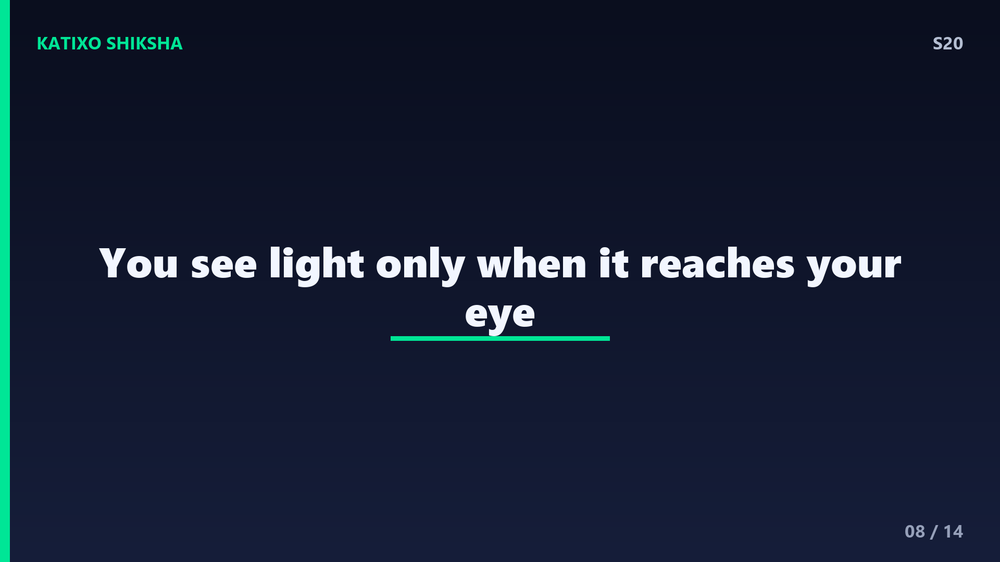
Slide 8इसका मतलब, दोस्तों, तुम रोशनी को तभी देखते हो जब वो सीधे तुम्हारी आँख तक पहुँचे। चाँद और सूरज इसलिए चमकते दिखते हैं क्योंकि उनकी सीधी रोशनी हम तक आती है। पर दो तारों के बीच की खाली जगह में जो रोशनी इधर उधर जा रही है, वो तुम्हारी आँख में नहीं घुसती, इसलिए वो जगह काली लगती है। इसीलिए astronauts को space में भी सूरज तो चमकता दिखता है, पर बाकी आसमान घना काला, क्योंकि बीच में बिखेरने वाला कुछ नहीं होता।
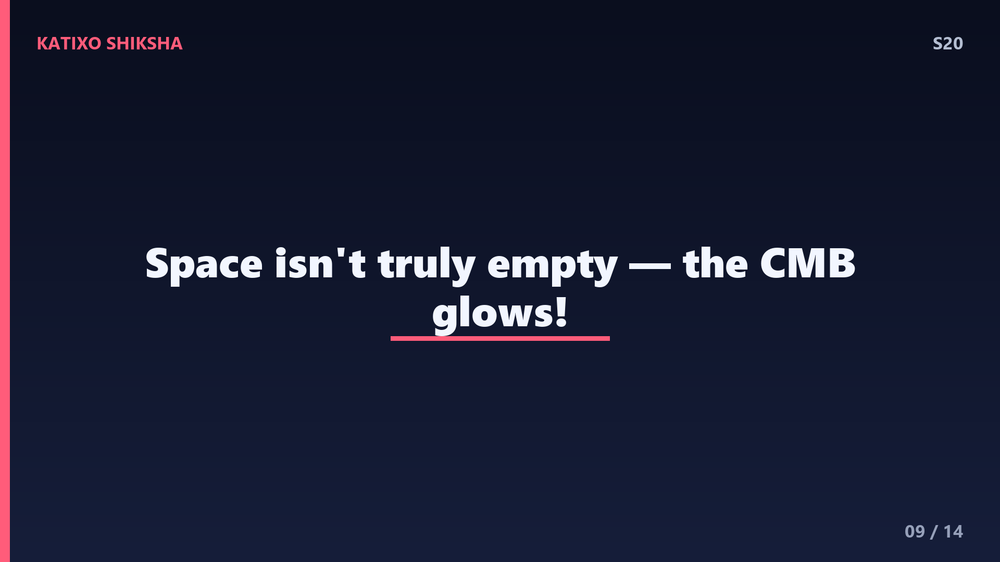
Slide 9अब एक हैरान कर देने वाली बात, दोस्तों। space सच में पूरी तरह काला नहीं है! अगर हम special telescopes से देखें, तो पूरे आसमान में एक हल्की सी background glow भरी हुई है। इसे Cosmic Microwave Background कहते हैं, छोटे में CMB। ये उस big bang की बची हुई रोशनी है, जब ब्रह्मांड बना था। पर ये रोशनी इतनी खिंच चुकी है कि अब ये microwave बन गई है, हमारी आँखों के लिए अदृश्य। तो काला आसमान असल में पूरी तरह खाली नहीं, उसमें ब्रह्मांड की पहली रोशनी छुपी है!
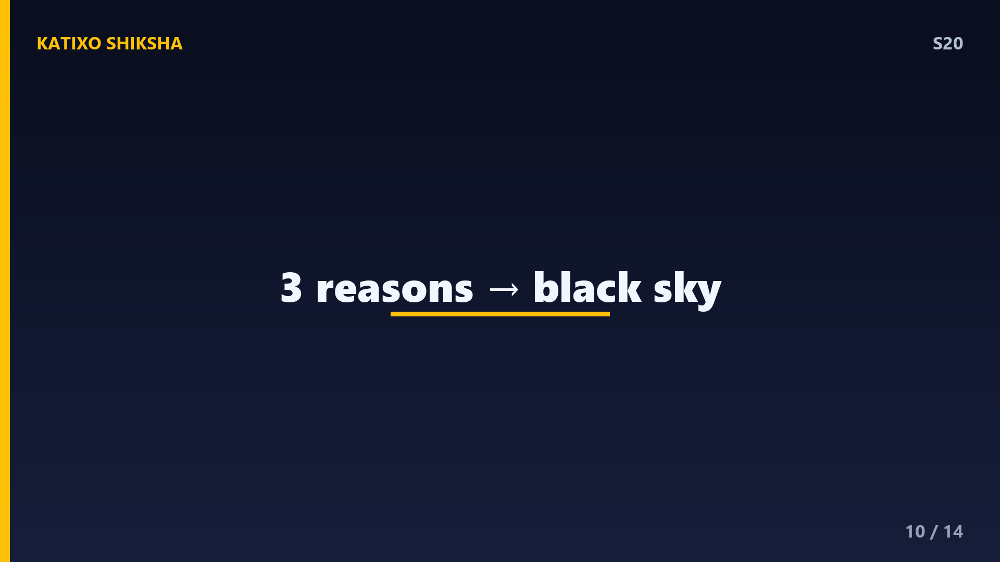
Slide 10तो पूरी पहेली का जवाब जोड़ते हैं, दोस्तों। space काला दिखता है तीन मुख्य कारणों से। एक, ब्रह्मांड की उम्र सीमित है, इसलिए बहुत दूर के तारों की रोशनी अभी तक पहुँची नहीं। दो, ब्रह्मांड फैल रहा है, जिससे दूर की रोशनी redshift होकर हमारी आँखों के लिए invisible हो जाती है। और तीन, space में रोशनी को बिखेरने वाला कुछ नहीं, इसलिए वो हमें तभी दिखती है जब सीधे आँख में आए। यही तीनों मिलकर रात का काला आसमान बनाते हैं।
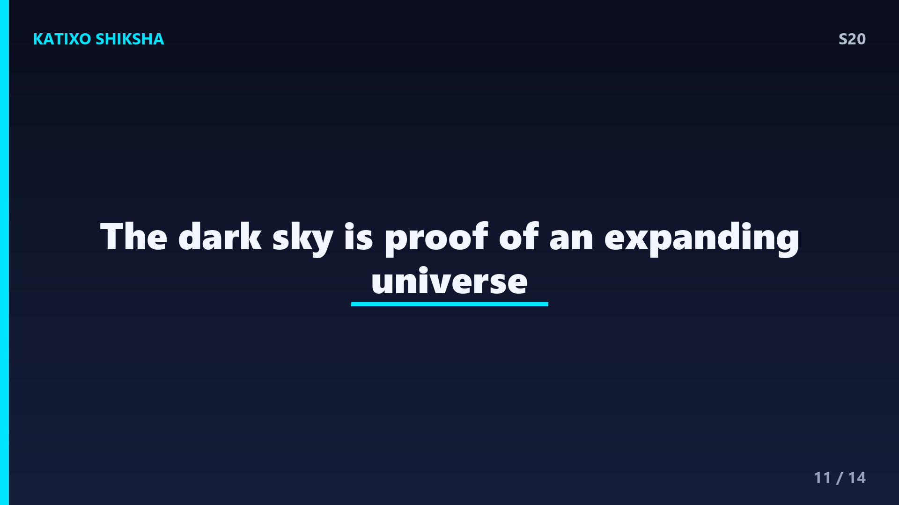
Slide 11ज़रा सोचो ये कितनी गहरी बात है, दोस्तों। जब तुम रात के काले आसमान को देखते हो, तो असल में तुम ब्रह्मांड की उम्र और उसके फैलने का सबूत देख रहे हो। वो अंधेरा हमें बता रहा है कि ब्रह्मांड हमेशा से नहीं था और लगातार बदल रहा है। एक तरह से, space का काला रंग खुद एक बहुत बड़ी खोज है। तो अगली बार जब तुम तारों को देखो, तो उस काले हिस्से को भी ध्यान से देखना, क्योंकि वो खालीपन भी बहुत कुछ कह रहा है!
Slide 12Quick brain check, दोस्तों! तीन सवाल, और जवाब से पहले video pause करके सोचो। पहला, इस पूरी पहेली का नाम क्या है, जो किसी वैज्ञानिक के नाम पर है? दूसरा, ब्रह्मांड के फैलने से रोशनी की wavelength खिंचने वाले effect को क्या कहते हैं? और तीसरा, ब्रह्मांड की उम्र करीब कितनी है? सोचो, याद करो, और अपना जवाब मन में पक्का कर लो। तैयार हो? चलो अगली slide पर जवाब मिलाते हैं!
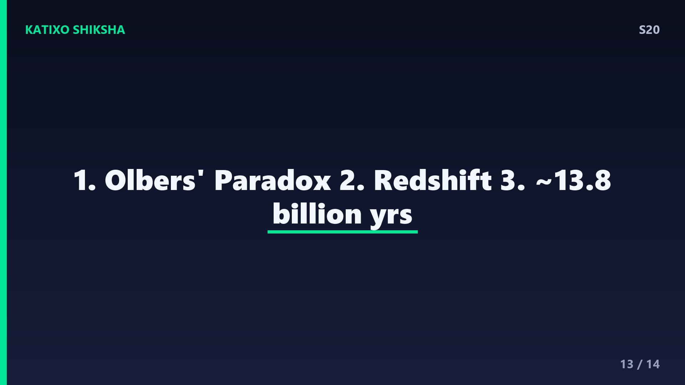
Slide 13तो जवाब देखते हैं, दोस्तों! पहला, इस पहेली का नाम है Olbers Paradox, उस वैज्ञानिक के नाम पर जिसने इसे मशहूर किया। दूसरा, ब्रह्मांड के फैलने से रोशनी की wavelength खिंचने वाले effect को कहते हैं redshift, जिसमें रोशनी लाल छोर की ओर खिसक जाती है। और तीसरा, ब्रह्मांड की उम्र करीब 13 अरब 80 करोड़ साल है। कितने सही हुए? अगर तीनों सही तो शाबाश, तुम तो असली cosmologist बनते जा रहे हो!
Slide 14तो आज हमने सीखा, दोस्तों, कि space इसलिए काला दिखता है क्योंकि ब्रह्मांड की उम्र सीमित है, वो फैल रहा है जिससे रोशनी redshift होकर invisible हो जाती है, और वहाँ रोशनी बिखेरने वाला कुछ नहीं। पर असल में हल्की सी CMB रोशनी हर जगह भरी है। ये था हमारी इस series का एक शानदार सफर! आगे और भी मज़ेदार सवालों के जवाब लेकर आते रहेंगे। तब तक जिज्ञासु बने रहो, सवाल पूछते रहो। Subscribe करना मत भूलना! Bye दोस्तों!